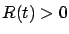
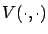
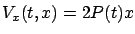
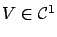
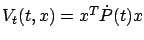
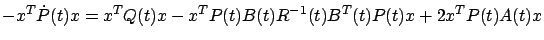
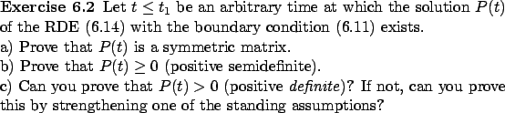
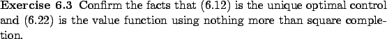

We now proceed to show that the control law (6.12) identified by the maximum principle is globally optimal. We already asked the reader to examine this issue via a direct analysis of the second variation in part b) of Exercise 3.8. Since then, however, we learned a general method for establishing optimality--namely, the sufficient condition for optimality from Section 5.1.4--and it is instructive to see it in action here.
Specialized to our present LQR problem, the HJB equation (5.10) becomes

, it is easy to see that the infimum of the quadratic function ofIn order to apply the sufficient condition for optimality proved in Section 5.1.4, we need to find a solution

of (6.19). Then, for the feedback law (6.12) to be optimal, it should match the feedback law given by (6.18) for this![[*]](crossref.gif) .) This will in turn be true if we have
.)
.) This will in turn be true if we have
.)
For the moment, let us proceed under the assumption (which will be validated momentarily) that  is symmetric for all
is symmetric for all  . A guess for
. A guess for  is actually fairly obvious, and might have already occurred to the reader:
is actually fairly obvious, and might have already occurred to the reader:

we see that (6.20) is also fulfilled. Now, let us check whether the function (6.22) satisfies (6.19). Since
, the viscosity solution concept is not needed here. Noting that
and plugging the two expressions for the partial derivatives of

or, equivalently,
It is useful to reflect on how we found the optimal control.
First, we singled out a candidate optimal control by using the maximum principle. Second, we identified a candidate value function and verified that this function and the candidate control satisfy the sufficient condition for optimality. Thus we followed the typical path outlined in Section 5.1.4.
The next exercise takes a closer look at properties of  and closes a gap that we left in the above argument.
and closes a gap that we left in the above argument.

It was both insightful and convenient to employ the sufficient condition for optimality in terms of the HJB equation to find the expression for the optimal cost and confirm optimality of the control (6.12). However, having the solution  of the RDE (6.14)
with the boundary condition (6.11) in hand, it is also possible to solve the LQR problem by direct algebraic manipulations without relying on any prior theory.
of the RDE (6.14)
with the boundary condition (6.11) in hand, it is also possible to solve the LQR problem by direct algebraic manipulations without relying on any prior theory.
